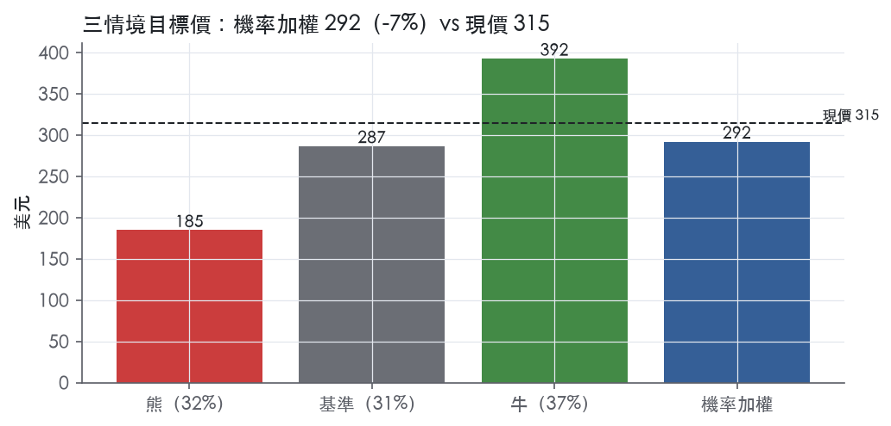
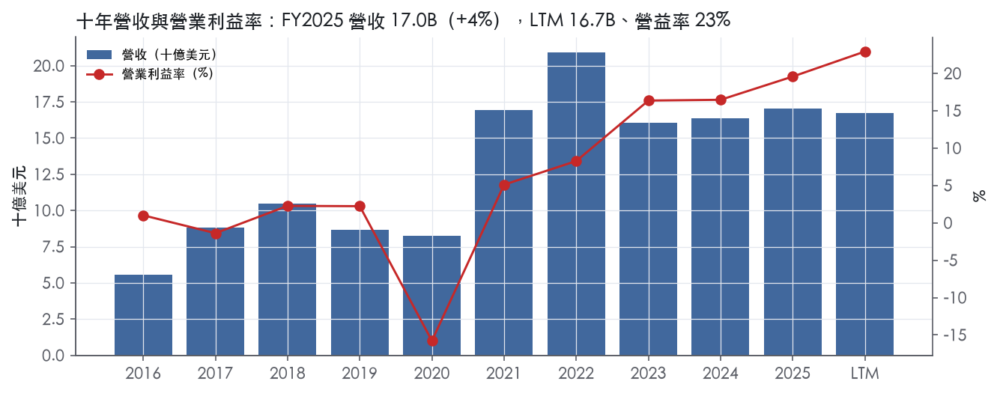
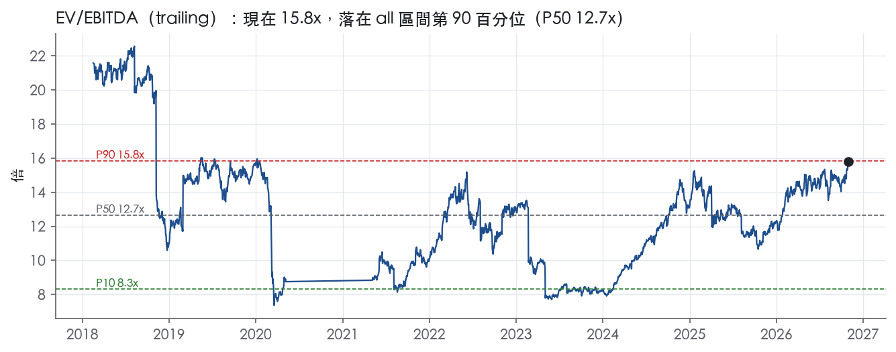
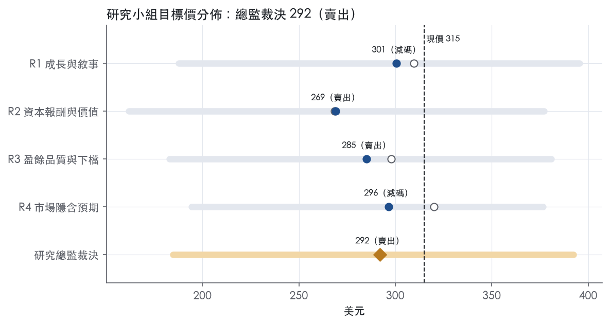
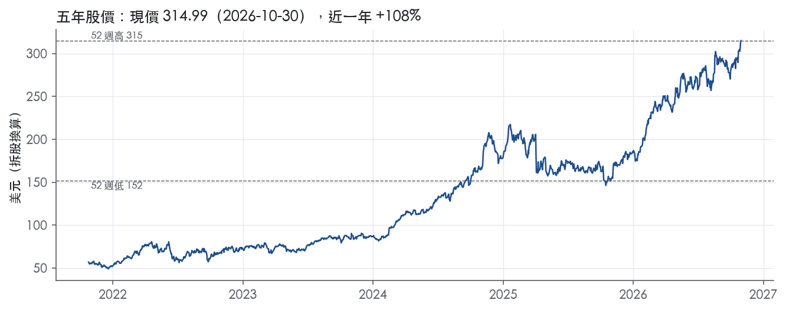

評等總表 › 能源 › TRGP
盈餘達標但個股溢價收斂，看空｜評等 賣出｜目標價 292
| 評等 | 賣出（邊界，鄰近減碼） |
| 12 個月目標價 | 292 美元 |
| 現價 | 314.99 美元（2026-10-30） |
| 預期報酬 | 股價 -7.3%＋股息 1.8%＝總報酬 -5.5%；同業籃門檻 10.0%，超額 -15.5% |
| 估值方法 | EV/EBITDA 13.7x，套在未來四季的EBITDA |
| 三情境 | 熊 185／基準 287／牛 392 |
| 研究流程 | 四位研究員兩輪辯論＋研究總監裁決 |
| 資料來源 | SEC EDGAR XBRL、Tiingo、FRED（全免費） |
盈餘達標但個股溢價收斂，看空（研究總監裁決，四位研究員兩輪辯論後）
評等 賣出（邊界，鄰近減碼）｜12 個月目標價 292 美元（總監三情境機率加權 293 與研究員中位數 291 各半）｜現價 314.99（2026-10-30）
預期報酬：股價 -7.3%＋股息 1.8%＝總報酬 -5.5%。同業籃門檻 10.0%，超額 -15.5%，離減碼的分界不到三個百分點，屬邊界評等（落在其他級距的機率約五成）。
估值方法：EV/EBITDA 13.7x，套在未來四季的EBITDA。三情境：熊 185（32%）／基準 287（31%）／牛 392（37%）。
什麼會讓研究總監改變看法：2026Q3 adjusted EBITDA 不低於 1,603.1M 且管理層說明行銷利潤來自出口費率或長約等結構性來源，或 2027 成長資本支出指引低於 3.0B 並開始去槓桿，我會把倍數上移到 14.5x 以上、轉中性；若同業中位數時間序列顯示類股也在上移，溢價空間放大。
| 過去四季（實際，FY2026Q2） | 未來四季 | 第 5–8 季 | 第 9–12 季 | |
|---|---|---|---|---|
| 營收（B） | 16.7B | 17.3B | 18.4B | 19.5B |
| 營收成長 | -2.0% | 3.5% | 6.0% | 6.0% |
| 營業利益率 | 22.9% | 23.0% | 23.5% | 23.5% |
| EPS（美元） | 10.46 | 14.48 | 15.76 | 16.79 |
| EPS 成長 | 47.0% | 38.4% | 8.8% | 6.5% |
| 每股股息（美元） | 4.25 | 4.25 | 4.25 | 4.25 |
| P/E（現價） | 30.1x | 21.8x | 20.0x | 18.8x |
| 股息殖利率（現價） | 1.8% | 1.3% | 1.3% | 1.3% |
過去四季為申報數字；預測為研究總監的假設、程式計算。倍數與殖利率都用現價計算，用來看現價對應各期獲利的高低。
| 情境 | 機率（歷史） | 故事 | 未來四季營收成長 | 第 5–8 季營益率 | 倍數 | 目標價 | 股價漲跌 |
|---|---|---|---|---|---|---|---|
| 熊 | 32%（32%） | WTI走本行上行路徑72；風險表第2條Waha負價減產轉為持續、第4條行銷利潤回落、第1條倍數回歸5y P50 12.0x、第3條槓桿3.44x限制彈性 | -5.0% | 19.5% | 12.0x | 185 | -41.4% |
| 基準 | 31%（32%） | EBITDA照指引上緣成長、行銷利潤正常化，NTM資本支出高峰推升淨負債，個股溢價收斂到1年平均附近 | 3.5% | 23.5% | 13.7x | 287 | -9.0% |
| 牛 | 37%（36%） | WTI走本行下行路徑95，Permian量能與LPG出口加速、行銷利潤延續，分母擴大使營益率不高於Q2尖峰，個股溢價守在現行附近（WMB 17.4x為上限參照） | 12.0% | 24.0% | 16.0x | 392 | 24.6% |
目標價由程式依研究總監的驅動與倍數計算；機率由研究總監給定。括號內是歷史頻率：把這檔股票過去十年 12 個月報酬的波動形狀，置中在基準情境，結果落在各情境附近的比例。

四位研究員用不同方法各自估值，回應研究總監的質疑後交出第二輪，最後由總監逐點裁決。各研究員的主張見第七章，裁決理由見第八章，完整論證見《研究底稿》。
| 立場（一輪→二輪） | 加權目標價（一輪→二輪） | 評等（一輪→二輪） | 第二輪倍數 | 熊～牛目標價 | |
|---|---|---|---|---|---|
| R1 成長與敘事 | 中性→看空 | 310→301 | 減碼→減碼 | 14.0x | 188～396 |
| R2 資本報酬與價值 | 看空→看空 | 269→269 | 賣出→賣出 | 13.0x | 162～377 |
| R3 盈餘品質與下檔 | 看空→看空 | 298→285 | 減碼→賣出 | 13.7x | 183～381 |
| R4 市場隱含預期 | 看空→看空 | 320→296 | 減碼→減碼 | 14.3x | 194～377 |
| 研究總監裁決 | 看空 | 292 | 賣出 | 13.7x | 185～392 |
目標價由程式依各自的驅動與倍數計算；評等＝機率加權總報酬 − 同業籃門檻。
Targa Resources Corp.（TRGP）是一家美國中游能源公司，橫跨天然氣與NGL（天然氣液）的蒐集、處理、物流、分餾、儲存、出口與行銷。公司主要客戶是Permian等盆地的上游生產商（透過gathering and processing服務收取費用或以percent-of-proceeds方式分成），以及下游買方包括NGL出口客戶與行銷對手方。2025年及2024年，沒有任何單一客戶占合併營收10%以上¹。公司營收模式分為兩塊：一是「Sales of commodities」商品銷售（受天然氣、NGL、原油價格波動影響），二是「Fees from midstream services」服務費（蒐集、處理、運輸、分餾等固定或變動費率）²。公司以避險工具管理一部分天然氣、NGL及凝析油權益量的商品價格風險，避險期間可達2029年¹。
Targa的營運分為兩大報告分部：Gathering and Processing（G&P）與Logistics and Transportation（L&T），外加一個「Other」項目（主要是未指定為現金流避險的商品衍生品按市值計價損益）¹。G&P分部2025年調整後營運利潤率成長，主因Permian天然氣入口量增加，受惠於Roadrunner II、Greenwood II、Bull Moose、Pembrook II、Bull Moose II等新廠陸續投產及生產商活動強勁，部分被其他地區較低量能抵銷¹。L&T分部2025年調整後營運利潤率為3,182.0M美元，較2024年2,717.4M美元增加464.6M美元（+17%），主因管線運輸與分餾利潤率提高，以及行銷利潤率提升；NGL管線運輸量達968.3 MBbl/d（+21%），分餾量達1,057.6 MBbl/d（+13%），出口量429.1 MBbl/d（+1%），NGL銷售量1,212.3 MBbl/d（+5%）¹。Other項目2025年營運利潤率為負5.3M美元，較2024年負164.6M美元大幅收斂159.3M美元，主因商品衍生品市值變動¹。兩大分部各自占總營收或EBITDA比重，10-K未揭露明確百分比拆分。公司持續投入成長資本支出擴建處理廠與分餾/出口基礎設施：2025年成長資本支出3,213.0M美元，較2024年2,950.1M美元增加，主因G&P與Downstream Business擴建¹。
公司資產與業務高度集中於Permian盆地（含Midland與Delaware兩個子盆地）及墨西哥灣沿岸（Mont Belvieu分餾中心、Galena Park Marine Terminal出口碼頭）。Export volumes代表透過Galena Park Marine Terminal交付給第三方客戶、最終銷往國際市場的NGL產品量¹。通路上公司兼具實體資產（管線、處理廠、分餾廠、儲存、出口終端）與商業行銷團隊，透過優化（optimization）機會創造額外行銷利潤率²。客戶結構分散，無單一客戶占比超過10%，顯示公司對單一生產商或買方的依賴度低¹；但業務高度集中於單一地理區（Permian），地緣與天然氣基差（如Waha價格）波動是主要風險來源。
FY2025Q3（2025-09-30）：營收4.15B美元，年增7.8%，EBITDA 1.22B美元（is/ltm等資料包，fact id 略）。 FY2025Q4（2025-12-31，由年度倒推）：營收4.06B美元，年減7.9%，但EBITDA回升至1.31B美元，營益率22.6%為近八季較高水準（fact id 期別FY2025Q4）。 FY2026Q1（2026-03-31）：公司稱「Record adjusted EBITDA for the first quarter of $1.4 billion, an increase of 19% year-over-year」³；GAAP淨利歸屬TRGP普通股股東4.796億美元，較去年同期2.705億美元成長77%³；總營收4,094.7M美元，較去年同期4,561.5M美元下滑10%，主因商品銷售價格較低³；公司當時將2026全年調整後EBITDA展望上調至57億至59億美元區間（「Targa now estimates full year 2026 adjusted EBITDA to be between $5.7 billion and $5.9 billion」）³。 FY2026Q2（2026-06-30）：公司稱「Record adjusted EBITDA for the second quarter of $1.6 billion, an increase of 38% year-over-year and a 14% increase compared to the first quarter」²；調整後EBITDA為1,603.1M美元，去年同期1,163.0M美元²；淨利歸屬TRGP普通股股東764.6M美元，較去年同期629.1M美元增加135.5M美元（+22%）²；公司進一步將全年展望上修至「towards the top end of $5.7 billion to $5.9 billion range」²；公司並宣布本季每股股息1.25美元（年化5.00美元），較去年同期增加25%²。整體趨勢：連續兩季創紀錄EBITDA，獲利能力穩步上升，主因Permian入口量與NGL運輸/分餾/出口量創紀錄，以及行銷優化利潤率擴大。
公司將2026成長資本支出維持在約4.5B美元（「We continue to estimate 2026 net growth capital expenditures of approximately $4.5 billion」），聚焦Permian新建處理廠（Roadrunner III、Copperhead II、East Driver等）及Mont Belvieu分餾擴建（Train 11、12、13）與NGL管線/出口擴建（Delaware Express、Speedway NGL Pipeline、GPMT LPG Export Expansion）²。公司表示全年展望上調「driven by the realization of strong marketing and optimization margin particularly in the first and second quarters of the year, and continued strength of volume growth of our integrated assets across the full year」²。公司強調其一體化資產模式（integrated assets）讓G&P上游量能增長直接帶動L&T下游運輸、分餾、出口利潤率同步成長³。資本配置上，公司持續股票回購（2026Q2回購308,102股，耗資80M美元，剩餘回購額度1,239M美元）並提高股息（年化5.00美元/股，較去年同期增25%），顯示在成長資本支出高峰期仍同步回饋股東²。
總結來看，Targa目前處於多年成長資本支出週期（2025年成長資本支出3.21B美元、2026年預計約4.5B美元）支撐的量能擴張階段，Permian新廠逐季投產推動G&P與L&T兩端利潤率同步墊高，公司連續兩季刷新EBITDA紀錄並上調全年指引，顯示執行力與需求能見度均偏正面。風險集中在單一盆地（Permian）曝險、負Waha天然氣價格導致的生產商短期減產行為，以及高資本支出周期下的槓桿與利率敏感度（2026年上半年利息支出年增達兩位數）。股息與回購同步進行顯示管理層對現金流可持續性有信心，但FCF殖利率偏低（1.1%，ltm.fcf_yield類指標）顯示目前估值已反映相當樂觀的成長預期。

TRGP 評為窄護城河，趨勢穩定：我們有把握其 ROIC 在未來五年以上高於資本成本，但沒有把握能撐到十年以上。護城河來自 Permian 蒐集處理、管線、Mont Belvieu 分餾到 Galena Park 出口的一體化 NGL 系統，屬於效率規模，加上一體化帶來的成本優勢。評級壓在「窄」的原因是十年數字：ROIC 十年平均 6.6%，低於資本成本代理值 10.0%，有資料的 9 年中只有 4 年高於資本成本。趨勢定為穩定而非變寬，因為 ROIC 自 FY2022 起四年都落在 13.9% 到 15.2% 之間（–FY2025），水準高但沒有繼續往上走。
效率規模是第一來源：NGL 管線、分餾與出口碼頭屬於高固定成本、區域需求有限的資產，先建者占住管徑與廠址後，後進者很難取得足夠的量來回本。2025 年 NGL 管線運輸量 968.3 MBbl/d、分餾量 1,057.6 MBbl/d、出口量 429.1 MBbl/d¹。出口量是指在 Galena Park Marine Terminal 交付給第三方客戶、銷往國際市場的 NGL 產品量¹。路權方面，公司揭露 Land site lease and rights of way 承諾 374.3M 美元，部分協議為永久期限（"some of which are perpetual"）¹。這些難以複製的地面與地下通行權，提高了新進者重建平行系統的門檻。
成本優勢（一體化）是第二來源：上游處理廠的出氣量直接灌進自家下游管線與分餾廠，下游設施的利用率因此不必看第三方臉色。10-K 寫明 "Pipeline transportation and fractionation volumes benefited from higher supply volumes primarily from our Permian Gathering and Processing systems"¹。L&T 分部調整後營運利潤率從 2,717.4M 美元升到 3,182.0M 美元，增幅 17%¹。同期 G&P 端陸續投產 Roadrunner II、Greenwood II、Bull Moose、Pembrook II、Bull Moose II 等處理廠¹。上游擴廠帶動下游利潤率擴張，這個傳導機制就是一體化成本優勢的直接證據。
近四年看得到，十年看不到，數字與「寬」的主張直接衝突，所以我們只給「窄」。ROIC 十年標準差 8.4%，最低 -9.7%（FY2020），十年平均減資本成本為 -3.3%。營業利益率十年平均僅 5.4%、標準差 9.9%、最低 -15.8%；毛利率標準差 7.2%。這不是寬護城河該有的穩定度。
波動的根源是商品價格曝險：部分營收來自 percent-of-proceeds 合約，公司以收取商品銷售收入的一部分作為服務報酬¹。2025 年衍生品交易使營收減少 160.3M 美元¹。
我們仍維持「窄」而不下修到「無」，理由有兩點。第一，ROIC 自 FY2022 起連續四年高於資本成本（–FY2025）。第二，毛利率與營益率最新值 38.3% 與 19.6% 都是十年最高，且是在大規模新產能投產期間達成。這顯示一體化系統的規模效益正在落到利潤率上，不只是商品價格順風。不給「寬」的原因是：近四年的好成績恰好與資產擴張高峰重疊，尚未經歷一次完整的商品下行循環檢驗。
第一是資本密集度：FY2025 資本支出占營收 19.6%，FCF 利潤率僅 3.4%，2025 年成長資本支出 3,213.0M 美元¹。新投入資本若報酬率低於既有網路，ROIC 會被稀釋。
第二是商品價格：公司的避險只到 2029 年，且越遠期的避險比例越低¹。下一個價格低谷仍會直接衝擊 percent-of-proceeds 那部分的利潤。
第三是地理集中：處理量成長幾乎全部來自 Permian，生產商活動放緩會同時打擊上下游兩端。
第四是同業擴建：Permian 到墨西哥灣的 NGL 管線與分餾產能若被競爭者大量加建，效率規模的前提會被削弱。
第五是槓桿：長期債務到期總額 17,240.2M 美元¹。高槓桿會壓縮下行期間的擴張彈性。
目標倍數相對中游同業應持平，不給溢價。理由是窄護城河只支撐五年左右的超額報酬，十年 ROIC 平均仍低於資本成本，不足以支持長期溢價。現行 EV/EBITDA 15.8x 已高於 5 年 P90 的 14.5x、位於 5 年分位 99.9%，估值研究員不應再把護城河當作上修倍數的理由。
| 指標 | 最新 | 十年平均 | 標準差 | 最低 | 最高 |
|---|---|---|---|---|---|
| ROIC | 14.7% | 6.6% | 8.4% | -9.7% | 15.2% |
| 毛利率 | 38.3% | 28.6% | 7.2% | 19.0% | 38.3% |
| 營業利益率 | 19.6% | 5.4% | 9.9% | -15.8% | 19.6% |
| FCF 利潤率 | 3.4% | 0.3% | 9.9% | -18.8% | 10.6% |
| ROE | 67.9% | 19.7% | 33.9% | -41.0% | 67.9% |
程式計算。資本成本代理值（10 年債＋5%）：10.0%；ROIC 平均減資本成本：-3.3%；ROIC 有資料的 9 年中，高於資本成本 4 年。
Targa 的淨利有實際營業現金流支撐，應計比率長期為負值，顯示盈餘不是靠會計估計堆出來的（量化底稿：=1.89x、=-7.3%）。但自由現金流／淨利持續低於1且近三年均值僅0.48x，淨負債／EBITDA LTM 3.44x、近三年均值3.27x 均落在紅燈區，這兩項紅旗大部分可以用「公司正處於大規模產能擴張週期」解釋，但槓桿本身是實質限制，不是會計假警報，因此評級落在中等而非高品質。
營業現金流對淨利的轉換率長期良好，LTM 1.89x、近三年平均2.40x，十年平均更高達76.2x（量化底稿：dv.cfo_ni），十年平均異常偏高是因為FY2016–FY2020期間淨利多次接近零或為負（0.05B、-0.21B、-1.55B），分母極小把比率拉爆，不代表近年現金品質變差。應計比率LTM為-7.3%、近三年-9.5%、十年-10.1%，全部落在綠燈區，顯示盈餘長期由現金而非應計項目驅動。但自由現金流／淨利這一項紅燈是真的：LTM 0.33x、近三年平均0.48x，對照FY2025資本支出／營收達19.6%（資料包年度表），以及10-K揭露FY2025成長資本支出淨額3,343.5M、維護資本支出淨額226.4M⁴，可以確認FCF被壓低的主因是擴產支出而非營運現金轉換惡化。
公司在10-K將GAAP淨利調整為Adjusted EBITDA，FY2025主要加回項目包括：利息費用淨額852.8M、所得稅費用529.7M、折舊攤銷1,515.3M、股權獎酬補償69.5M、風險管理活動（衍生工具未實現變動）5.3M、訴訟與環境準備金18.6M、資產減損18.8M、少數股東權益調整11.4M⁴；FY2024對應項目分別為767.2M、384.5M、1,423.0M、63.2M、164.6M、4.1M、6.2M、3.9M⁴。從淨利1,923.0M一路加回到Adjusted EBITDA 4,957.4M，再扣利息832M、現金稅13.1M得Adjusted CFO 4,108.9M，再扣維護與成長資本支出得Adjusted FCF 539.0M⁴。我認為股權獎酬69.5M是真實經濟成本（稀釋股東），不該完全加回評價基礎上，但金額小、占營收僅0.4%不致扭曲盈餘；風險管理活動（FY2024高達164.6M、FY2025僅5.3M）屬於衍生品按市值計價的非現金波動，排除合理；訴訟與環境準備金18.6M、資產減損18.8M公司定義為非常規性項目⁴，金額相對Adjusted EBITDA僅個位數百分點，影響有限但環境合規費用若持續發生則不應視為一次性。
槓桿是真問題而非帳面假象：淨負債18.89B，總合併債務於2026年第二季達19,578M，其中優先無擔保票據17,900M、商業本票600M、應收帳款證券化451M、融資租賃794M²，淨負債／EBITDA LTM已到3.44x。公司2026Q2總流動性約3.2B，含TRGP循環信用額度可用2.9B、證券化額度可用149M、現金132M²，短期流動性無虞，但債務餘額持續攀升（FY2022 10.48B→FY2025 16.50B，資料包年度表）。資本配置上，公司同時加碼回饋股東與繼續高速擴產：2026Q2宣布每股1.25美元季度股息（年化5.00美元），較去年同期增加25%，當季配息約268M²；同季回購308,102股，均價259.93美元，淨成本80M，回購額度剩餘1,239M²；但2026年淨成長資本支出估計約4.5B、淨維護資本支出約250M²，資本支出規模遠超過股東回饋與自由現金流，意味著擴產主要靠舉債融資，這會持續推升槓桿而非去槓桿。稀釋股數變動方面LTM -0.1%、近三年平均-2.1%屬綠燈，顯示公司有在用回購抵銷股權獎酬稀釋。
估值應以GAAP淨利與Adjusted EBITDA並列看，但不能直接套用Adjusted FCF做現金殖利率估值，因為FY2025 Adjusted FCF 539.0M中有相當部分是靠延後成長資本支出時間點才轉正，一旦擴產計畫持續，FCF轉換率仍會偏低。盈餘本身不需要大幅打折，因為應計比率與CFO/NI均顯示現金有跟上帳面淨利；但在EV/EBITDA或P/FCF倍數上，3.44x的淨負債／EBITDA與持續擴張的舉債規模應限制給予的倍數上限，目前EV/EBITDA 15.7x已處於過去五年第99.9百分位，顯示市場已經給了成長溢價，槓桿風險讓我傾向用保守端（而非上緣）的倍數帶做基準假設。
| 項目 | LTM | 近三年 | 十年 | 燈號 | 規則 |
|---|---|---|---|---|---|
| 營業現金流／淨利 | 1.89x | 2.40x | 76.2x | 綠 | ≥1.00x 綠、<0.80x 紅 |
| 自由現金流／淨利 | 0.33x | 0.48x | -120.6x | 紅 | ≥0.90x 綠、<0.60x 紅 |
| 應計比率（(淨利−CFO)／平均總資產） | -7.3% | -9.5% | -10.1% | 綠 | ≤0.0% 綠、>5.0% 紅 |
| SBC／營收 | 0.5% | 0.4% | 0.5% | 綠 | ≤3.0% 綠、>8.0% 紅 |
| 淨負債／EBITDA | 3.44x | 3.27x | 2.57x | 紅 | ≤1.50x 綠、>3.00x 紅 |
| 利息保障倍數（營業利益／利息） | — | — | — | — | ≥8.00x 綠、<3.00x 紅 |
| 稀釋股數年變動 | -0.1% | -2.1% | 4.4% | 綠 | ≤0.0% 綠、>3.0% 紅 |
| （股利＋回購）／淨利 | — | — | — | — | ≥50.0% 綠、<0.0% 紅 |
| 應收帳款成長 − 營收成長（FY2025） | -12.8pp | — | — | 綠 | ≤5pp 綠、>15pp 紅 |
| 存貨成長 − 營收成長（FY2025） | +24.5pp | — | — | 紅 | ≤5pp 綠、>15pp 紅 |
程式計算；燈號以 LTM（無則近三年平均）判定。
| 風險 | 觸發指標（看什麼數字、在哪裡看） | 對 EPS 的影響方向與粗略幅度 | 未來 12 個月發生機率（高／中／低） | 出處 |
|---|---|---|---|---|
| 1. 估值倍數已處歷史高位，任何成長放緩都會被放大 | EV/EBITDA（現在15.8x vs 5年P50 12.0x，5年分位99.9%）、EV/Sales（5.2x，分位99.9%）、P/FCF（91.5x，分位88.4%） | 方向：負向，幅度大（倍數回歸至5年P50將造成股價顯著重估，與EPS無關但影響倍數） | 高 | 研究判斷 |
| 2. Permian單一盆地集中＋負Waha天然氣價格導致生產商減產 | Permian inlet volumes月變化、Waha現貨價、G&P segment adjusted operating margin（8-K季報揭露） | 方向：負向，幅度中（2026Q2已出現「temporary curtailments by certain producer customers in response to negative Waha natural gas prices」²） | 中 | 8-K 財報新聞稿（2026-08-06） |
| 3. 高槓桿＋高資本支出週期下的利率與再融資風險 | 總債務（19.58B美元，2026Q2）²、利息支出淨額（236.6M美元，單季，年增）²、ust10y/hy_oas走勢 | 方向：負向，幅度中（利息支出單季年增幅度大，侵蝕淨利成長） | 中 | 8-K 財報新聞稿（2026-08-06） |
| 4. 商品價格與行銷優化利潤率的波動性（非純費率業務） | Sales of commodities營收變化（2026H1年減8%，583.2M美元）²、Fees from midstream services占比變化 | 方向：雙向，幅度中（商品銷售收入下滑但費用類收入成長，淨影響視避險與優化利潤率而定） | 中 | 8-K 財報新聞稿（2026-08-06） |
| 5. FERC監管／費率調整風險（Badlands waiver撤銷案等） | FERC Docket No. IS26-24-000（Targa Badlands tariff聽證結果）、FERC對NGL管線waiver的審查進度⁵ | 方向：負向，幅度小（單一資產曝險，非全集團性） | 低 | 10-K 年報 FY2025 Item 1A（風險因素） |
估值風險是最大的單一變數。 TRGP目前EV/EBITDA為15.8x，位於過去5年區間的第99.9分位，遠高於5年中位數12.0x；EV/Sales同樣處於99.9%分位（現在5.2x vs 5年P50 2.4x）。P/FCF為91.5x，顯示股價已遠超過自由現金流的支撐能力，FCF殖利率僅1.1%。這代表市場已把未來多年的成長資本支出（2026年預計約4.5B美元²）兌現為EBITDA成長的預期完全定價進股價，任何執行延遲或需求不如預期，倍數回歸至歷史中位數的風險遠大於EPS本身下修的風險。
Permian集中度與Waha負價格是最可監測的營運風險。 公司在2026年第二季已明確揭露「Permian inlet volumes increased more than 450 MMcf/d despite temporary curtailments by certain producer customers in response to negative Waha natural gas prices in the second quarter」²。這代表即便在量能成長階段，生產商已經會因為基差價格為負而主動減產，若此現象擴大或持續時間拉長，G&P segment的adjusted operating margin將直接受衝擊。此風險可直接透過每季8-K披露的Permian inlet volumes與G&P margin變化進行監測。
槓桿與利率敏感度在高資本支出週期中會持續放大。 截至2026年6月30日，總合併債務為19,578M美元，其中17,900M美元為優先無擔保票據、600M美元為商業票據、451M美元為應收帳款證券化融資、794M美元為融資租賃負債²。單季利息支出淨額為236.6M美元²，在4.5B美元年度成長資本支出的背景下，若長端利率（目前ust10y為4.98%）維持高檔或進一步上升，再融資成本將持續墊高，侵蝕淨利成長速度。
商品銷售與費用型收入結構轉換，是觀察盈餘品質的關鍵。 2026年上半年Sales of commodities營收年減583.2M美元（-8%），而Fees from midstream services年增296.4M美元（+23%）²，顯示營收結構正朝費用化、較穩定的方向移動，這本身是正面訊號。但公司管理層也明確指出，近兩季EBITDA成長的上修理由包括「the realization of strong marketing and optimization margin particularly in the first and second quarters of the year」²，行銷優化利潤率屬於較難預測、波動性較高的收入來源，若這部分利潤率回落，全年EBITDA指引上緣（5.7–5.9B美元區間的top end）可能無法兌現。
FERC監管風險範圍有限但具體可追蹤。 10-K揭露Targa Badlands資產的FERC waiver爭議案，行政法官已於2024年3月裁定Badlands資產不再符合waiver資格，FERC於2025年8月7日確認此裁定，Targa Badlands已於2025年10月29日提交初始關稅費率申請（FERC Docket No. IS26-24-000），目前多家託運方正挑戰該費率的合理性，和解討論仍在進行中⁵。此案影響範圍限於Badlands單一資產群，對集團整體EPS影響有限，但具體進度可透過FERC docket追蹤。
1.股票回購與股息同步擴張，但FCF覆蓋率偏薄。 公司2026年第二季仍執行308,102股回購（耗資80M美元）並將年化股息提高至5.00美元/股（+25%）²，同時維持約4.5B美元的年度成長資本支出。LTM FCF僅0.74B美元，FCF殖利率僅1.1%，股息率1.8%，顯示股東回饋主要仍依賴舉債或營運現金流成長而非自由現金流覆蓋，若商品價格或量能成長不如預期，資本配置的靈活性將受壓縮。
2.連續兩季「創紀錄」EBITDA與指引上修，市場預期已高度錨定在管理層的樂觀敘事上。 公司連續在2026Q1、Q2財報中使用「record adjusted EBITDA」字眼並兩次上修全年指引至區間上緣²，這種連續超預期的模式一旦在某一季出現不及預期（即便僅是環比放緩而非衰退），股價對負面意外的反應可能被放大，尤其在目前估值分位已處歷史極端水準的背景下。
現價 314.99 對應 trailing（過去四季）P/E 30.1x、EV/EBITDA 15.7x、EV/EBITA 20.6x、EV/Sales 5.2x、FCF 殖利率 1.1%。主要估值倍數 EV/EBITDA 現在 15.8x，落在all區間第 90 百分位（P10／P50／P90 = 8.3x／12.7x／15.8x）。

把程式的機械基準預測放到現價下，市場付的前瞻倍數是：EV/EBITDA（未來四季） 19.4x、P/E（未來四季） 30.3x、EV/EBITDA（第 5–8 季） 24.9x、P/E（第 5–8 季） 47.4x。反推 DCF 顯示市價隱含未來五年營收年成長 150.0%（WACC 9.0%、終值成長 3.0%、FCF 利潤率 -8.4%，SBC 不加回）。
| 倍數 | 現在 | all P10 | all P50 | all P90 | 現在分位 | 全期 P50 |
|---|---|---|---|---|---|---|
| P/E | 30.1x | 22.1x | 30.2x | 72.0x | 49.6% | 30.2x |
| EV/EBITDA | 15.8x | 8.3x | 12.7x | 15.8x | 89.6% | 12.7x |
| EV/EBITA | 20.6x | 11.4x | 18.8x | 53.6x | 61.4% | 18.8x |
| EV/EBIT | 22.6x | 13.0x | 20.9x | 123.8x | 60.4% | 20.9x |
| EV/Sales | 5.2x | 1.3x | 1.7x | 3.6x | 100.0% | 1.7x |
| P/S | 4.0x | 0.7x | 1.1x | 2.7x | 100.0% | 1.1x |
| P/FCF | 91.5x | 8.2x | 23.3x | 90.9x | 90.3% | 23.3x |
trailing 倍數（股價 ÷ 過去四季）；分位以每個交易日計算。
同業籃：OKE, WMB, KMI, ET, EPD（手動名單（playbooks/peers.yaml））。評等門檻 10.0%：同業「倍數不變下持有一年」的隱含報酬中位數（＝ FCF 殖利率 ×(1＋g)＋g，g 為 5 年營收年複合成長並夾在 −2%～8%），每家夾在 0～15%、P/E 低於 5 倍視為資料可疑而排除，中位數再限制在 10 年債到 10 年債＋5% 之間（同業原始中位數 12.3%）；排除：ET（隱含報酬算不出來）。
| 代號 | 市值 | 5 年營收 CAGR | 營益率 | ROIC | P/E | 5 年 P/E 中位數 | EV/EBITDA | P/FCF | 隱含報酬 |
|---|---|---|---|---|---|---|---|---|---|
| TRGP | 67.5B | 15.6% | 22.9% | 14.7% | 30.1x | 28.0x | 15.7x | 91.2x | 9.2% |
| OKE | 61.2B | 31.5% | 14.2% | 8.5% | 15.0x | 16.3x | 11.7x | 24.2x | 12.5% |
| WMB | 91.1B | 9.1% | 38.2% | 7.9% | 29.6x | 25.5x | 17.4x | — | 11.6% |
| KMI | 75.5B | 7.7% | 29.0% | 6.0% | 20.9x | 20.9x | 13.8x | 24.5x | 12.1% |
| ET | — | 17.0% | 10.0% | — | — | — | — | — | — |
| EPD | 83.4B | 14.1% | 13.4% | — | — | — | 11.3x | 24.1x | 12.5% |
| 同業中位數 | 14.1% | 14.2% | 7.9% | 20.9x | 20.9x | 12.7x | 24.2x | 10.0% |
全部 trailing，程式以各公司 SEC XBRL 與 Tiingo 行情計算；第一列為本檔。
P/E 相對同業中位數：現在 43.8%，過去 1 年平均 21.6%、3 年 36.0%、5 年 67.5%；EV/EBITDA 相對同業中位數：現在 24.0%，過去 1 年平均 8.2%、3 年 -4.1%、5 年 -6.5%。
程式的機械基準（成長率從過去四季年增率三年收斂到 6%、利潤率持平）用 EV/EBITDA all P50（trailing） 估值得到 121（-61.5%），用現行倍數得到 173。這兩個數字只是參考點，不是本報告的目標價；研究員對這個定價的回應在第七章。
下表是每位研究員第一輪（各自獨立）與第二輪（回應研究總監的質疑後）的結果。目標價全由程式依各自的假設計算。
| 立場（一輪→二輪） | 加權目標價（一輪→二輪） | 評等（一輪→二輪） | 第二輪倍數 | 熊～牛目標價 | |
|---|---|---|---|---|---|
| R1 成長與敘事 | 中性→看空 | 310→301 | 減碼→減碼 | 14.0x | 188～396 |
| R2 資本報酬與價值 | 看空→看空 | 269→269 | 賣出→賣出 | 13.0x | 162～377 |
| R3 盈餘品質與下檔 | 看空→看空 | 298→285 | 減碼→賣出 | 13.7x | 183～381 |
| R4 市場隱含預期 | 看空→看空 | 320→296 | 減碼→減碼 | 14.3x | 194～377 |
| 研究總監裁決 | 看空 | 292 | 賣出 | 13.7x | 185～392 |
目標價由程式依各自的驅動與倍數計算；評等＝機率加權總報酬 − 同業籃門檻。
分歧度：第一輪 加權目標價 269～320（區間＝現價的 16%）· 倍數 13～14.5x · 立場 中性×1、看空×3；第二輪 加權目標價 269～301（區間＝現價的 10%）· 倍數 13～14.3x · 立場 看空×4（方向一致）。

| 研究員 | 第二輪主張 | 堅持的理由 |
|---|---|---|
| R1 成長與敘事 | 看空，倍數14.0x，類股與個股都已重估，只收斂個股溢價。 | 類股重估已反映在同業12.7x，倍數不再下調。 |
| R2 資本報酬與價值 | 看空，倍數13.0x，錨在五年中位數12.0x與同業12.7x之上。 | 溢價擴大只發生在個股，報酬率沒改善，倍數不向現價靠。 |
| R3 盈餘品質與下檔 | 看空，倍數13.7x，錨在全期中位數12.7x，溢價回到1年平均。 | 未來一年是支出高峰，資本支出率26%不下修。 |
| R4 市場隱含預期 | 看空，倍數14.3x，錨在過去一年中位數。 | 市場把第二季1,603M當成季度基線，下半年會低於第二季。 |
每位研究員的逐條回應與完整論證見《研究底稿》（TRGP_研究底稿_2026-11-01.docx）。
| 分歧點 | R1 成長 | R2 價值 | R3 品質 | R4 預期 | 什麼資料會分出勝負 |
|---|---|---|---|---|---|
| 1. 目標倍數與錨：這一年的重評是類股還是個股 | 14.0x，錨現行同業 12.7x 之上、5y P90 14.5x 之下；承認類股也重估，只收斂個股溢價 | 13.0x，錨 5y P50 12.0x／同業 12.7x；用 P50 配同期平均溢價的三組配對推論同業過去不低於 12.7x，重評屬個股 | 13.7x，錨全期 P50＝同業 12.7x，溢價回到 1 年平均 8.2% 那一側；重評屬個股 | 14.3x，錨 1y P50；撤回「純個股」改為類股與個股同時重評 | 同業中位數 EV/EBITDA 時間序列（材料缺）；替代判準：配對口徑是否一致（中位數配平均） |
| 2. NTM 營益率 op_margin_y1 | 24.0%：低油價縮小分母 | 22.4%：D&A 上調同幅扣營益率，EBITDA 利潤率不變 | 23.0% | 23.0%：分母縮小與行銷利潤回落抵銷，貼近 LTM 22.9% | 2026Q3 財報：adjusted EBITDA 是否低於 Q2 的 1,603.1M、GAAP 營益率是否回到 Q1 20.7%–Q4 22.6% 區間 |
| 3. 資本支出率 capex_pct_rev（決定 NTM 期末淨負債） | 25% | 24% | 26%：NTM 正是支出高峰 | 25% | 2027 年淨成長資本支出指引（2027 年 2 月 Q4 財報） |
| 4. 熊情境深度（倍數、營益率） | 12.0x，19.5／19／19.5% | 11.0x，19.4／18.9／18.9% | 12.0x，20／19.5／20%；分母縮小、傷害在金額 | 12.0x，20.5／21／21.5% | Permian 入口量是否季減、Waha 減產是否從「暫時」變持續；Bull Run／Forza 投產時程 |
分歧 1：倍數，選 R3 的 13.7x，錨同業中位數＝自家全期 P50 12.7x。 先修正我自己：第一輪我對 R1、R4 的提問用 1 年帶 P10 11.9x（單一低點）配 1 年平均溢價 8.2%，這是分位點配平均值，口徑不對稱；R1、R4 據此得出「類股也重估」，不能成立。R2 的三組配對（1y P50 14.3x 配 8.2%、3y P50 12.6x 配 -4.1%、5y P50 12.0x 配 -6.5%；錨帶、同業表）是中位數配平均，口徑一致，三組都指向過去的同業中位數不低於現在的 12.7x。所以 TRGP 從 5y P50 12.0x 走到 15.8x（現值）主要是個股溢價擴張，對同業溢價由 5 年平均 -6.5% 變成 24.0%（同業表）。錨因此落在 12.7x，再論溢價。支持有限溢價的是結構變化：上半年服務費年增 23%、商品銷售年減 8%²，商品 β 下降；ROIC 14.7% 對同業 7.9%（同業表）則不是新事件，FY2022–FY2024 ROIC 同在 13.9%–15.2%（–FY2024）時 TRGP 仍是折價。壓住溢價的是護城河章「窄、不給溢價」與淨負債／EBITDA 3.44x 高於十年均值 2.57x（財務體質章量化底稿）。R3 取溢價回到 1 年平均那一側，三方證據都容納得下。R4 的 14.3x 錨在重評年的 1y P50，第二輪只撤回論證不動結論，缺口是他的「類股同時重評」與配對證據相反；R2 的 13.0x 幾乎不給服務費結構變化定價。期間口徑：錨是 trailing 帶與同業，horizon 用 未來四季。不採劇本的 三年平均：機械基準三年平均 EBITDA 3.47B 建立在營益率回歸十年中位數 3.7% 上，而十年中位數量的是一體化完成前、FY2016–FY2020 營益率介於 -15.8% 與 2.3%（年表）的公司；四位研究員一致，我同意。
分歧 2：NTM 營益率，選 R3／R4 的 23.0%。 LTM 22.9%（同業表）含 Q2 的 27.8% 尖峰與 Q1 的 20.7% 低點（FY2026Q1）。公司把上修歸因於「particularly in the first and second quarters」的行銷利潤²，R4 指出指引上緣隱含下半年季度低於 Q2，這往下；本行 WTI 97→88 縮小轉嫁型分母、服務費占比上升，這往上；D&A 年增 21%²再往下。R1 的 24.0% 要靠分母效果壓過行銷利潤回落與折舊，他的營業利益預測紀錄偏高 +2.6%，證據不足；R2 的 22.4% 把 D&A 上調全數從營益率扣掉、不給 Q2 投產的 Train 11、Delaware Express、East Driver 任何滿季增量，他勝過基準只有 55%。y2、y3 取 R3 的 23.5%／23.5%，不取 R4 的 24%／24.5%：8-K 沒載 Train 12、13、Speedway、GPMT 投產年份，且資本支出 26% 遠高於 D&A 10.5%，折舊會繼續升；R3 紀錄 +0.6% 最接近無偏。D&A 取 10.5%（R1／R2／R4）：Q2 單季 453.1M 對營收 4,440.1M²已在基準 9.9% 之上。
分歧 3：資本支出率，選 R3 的 26%。 程式用 NTM 期末淨負債算目標價，單一驅動要設在 NTM。2026 年淨成長資本支出約 4.5B、維護約 0.25B²，相對 LTM 營收 16.74B的比率高於基準 21.2% 與 FY2025 的 19.6%；上半年 FCF（Q1 -0.16B、Q2 0.43B，季表）顯示支出尚未達全年節奏，下半年會集中在 NTM 前段。R2 的 24% 把維護資本支出只有 226.4M⁴「砍得動」當基準，那是熊情境的緩衝，不是基準。
分歧 4：熊情境深度，選 R3（12.0x、20／19.5／20%）。 12.0x 是 5y P50，也是 OKE 11.7x、EPD 11.3x 的量級（同業表），1y P10 11.9x 證明 12 個月內出現過。R2 的 11.0x 要 TRGP 回到折價，但服務費結構變化是真的；5y P10 8.3x 來自 FY2020 EBITDA 為負的年代。熊營益率 20% 高於 FY2025 的 19.6%：R3 用 FY2023 營收 -23.3%、營益率 8.3%→16.4%（年表）證明低油價縮小分母會推高比率、傷害落在金額，機制完整；R1 的 19.5% 等於把下行算兩次。
其他驅動。 rev_growth_y1 四人一致 3%，我取 3.5%（own，假設）：研究部營收誤差中位數四人與我都系統性偏低 -0.4%～-0.7%，依紀錄往上修；Q2 總營收年增 4.2%（季表）已含商品銷售 -1%。rev_growth_y2 6%（四人一致）；y3 6%（R1／R4，2028Q1 有 Roadrunner III、Copperhead II，8-K 2026-05-07 經 R1 轉述，不影響目標價）。稅率 22%（R3，貼近近兩年實際有效稅率，判斷）；股數 -0.5%（R3，Q2 回購 80M²相對市值 67.54B 規模小，貼近 LTM -0.1%）。
漂移：不退回任何人。 R1（靠攏 77%）、R4（94%）的修正逐條對應我第一輪的 G1–G6、E1–E6，每條附證據，程式未標旗。R4 的營益率 25／26／26.5%→23／24／24.5% 是修正「行銷利潤一次性卻給最高營益率」的自相矛盾；R1 的 rev_y1 7%→3% 是我要求拆商品銷售與服務費後的方向修正，落點恰等於其他三人、幅度沒有獨立依據，我記下但不退回，基準我自己另定。R3 遠離中位數（-108%）是 Q1 錨回長帶的結果。drift_rejections 為空。
總經偏離：四人 macro_deviations 皆空，全部接受。R2 第一輪以 10 年債 4.98% 壓倍數，第二輪依 V2 刪除，確認無人再用利率把倍數壓在市場持平之下。基準 WTI 88（本行 2027Q3）、牛取本行下行路徑 95、熊取上行路徑 72，與指引一致。總經敏感度前提隱含 -4.4%（97→88），我的基準方向相同，不需另外理由。
| 驅動 | 機械基準 | 我的值 | 來源與理由 |
|---|---|---|---|
| rev_growth_y1 | 0.7% | 3.5%（假設） | own：四人 3%，依研究部營收偏低紀錄上修 |
| rev_growth_y2 | 3.3% | 6.0% | 四人一致；2028Q1 新廠落在 Q5–Q8 |
| op_margin_y1／y2／y3 | 16.5／10.1／3.7% | 23.0／23.5／23.5% | R3；分歧 2 |
| da_pct_rev | 9.9% | 10.5% | R1／R2／R4；Q2 D&A 年增 21% |
| capex_pct_rev | 21.2% | 26% | R3；分歧 3 |
| tax_rate | 19.8% | 22% | R3 |
| share_change_pct | -1.0% | -0.5% | R3 |
目標倍數 EV/EBITDA 13.7x，未來四季（錨為 trailing 帶與同業），錨同業中位數 12.7x＝自家全期 trailing P50 12.7x，溢價取回到過去 1 年平均 8.2% 那一側；低於現行 15.8x（5y 分位 99.9%）與 1y P50 14.3x，與 KMI 13.8x 同量級、低於 WMB 17.4x（同業表）。低於市場持平倍數的理由全是個股因素：溢價擴張沒有 ROIC 改善對應、槓桿升至 3.44x、LTM 含行銷尖峰、護城河窄；不用利率。
| 情境 | 機率 | 來源 | 驅動（相對基準） | 倍數 | 故事 |
|---|---|---|---|---|---|
| 牛 | 37% | R1 | 營收 12／7／8%，營益率 23.5／24／24.5% | 16.0x | WTI 走本行下行路徑 95，Permian 入口量與 LPG 出口加速、行銷利潤延續；分母擴大使營益率不高於 Q2 尖峰；個股溢價守在現行附近，WMB 17.4x 為上限參照 |
| 基準 | 31% | 總監 | — | 13.7x | EBITDA 照指引上緣成長、行銷利潤正常化，NTM 資本支出高峰推升淨負債，個股溢價收斂到 1 年平均附近 |
| 熊 | 32% | R3 | 營收 -5／2／5%，營益率 20／19.5／20% | 12.0x | WTI 走本行上行路徑 72；風險表第 2 條（Waha 負價減產從「暫時」變持續）、第 4 條（行銷利潤回落）、第 1 條（倍數回歸 5y P50）、第 3 條（槓桿 3.44x 限制彈性） |
機率從歷史基準率出發：程式對 R3 情境的對照是牛／基準／熊 37／31／32，我的牛取 R1、距離略遠，牛區只會更高不會更低。不做公司特有偏離：Waha 減產²與槓桿 3.44x 是熊的深度，已放進熊的驅動與倍數，不是頻率；連續兩季創紀錄與上修³,²同理是牛的深度。牛 37% 高於熊 32% 符合 TRGP 置中分布的右偏（P90 +83% 對 P10 -41%），也是對本部 22 份報告全部熊高於牛的修正。
差在倍數，不在盈餘。我們的 NTM EBITDA 路徑與公司指引上緣一致（adjusted 5.7–5.9B 靠上緣²），市場也接受這條路徑；分歧是市場把對同業 24.0% 的溢價（5 年平均 -6.5%，同業表）當成新常態，我們認為它回到 1 年平均 8.2% 附近，驅動是個股溢價擴張沒有 ROIC 改善對應、而槓桿在升。機械基準的市場隱含 19.4x 建立在 NTM EBITDA 4.44B 上，低於 LTM 5.49B，不是市場真正付的倍數。立場看空與程式評等一致：機率加權總報酬為負、低於同業門檻 10.0%，牛機率略高於熊不足以翻轉。
現價 314.99 → 點估目標價 287 → 機率加權目標價 293 → 目標價 292，差距拆成五段：成長順延 -72 美元（市場現行倍數 15.8x 一年後持平、獲利照機械基準）；倍數差 -44 美元（總監倍數 13.7x vs 市場持平倍數 15.8x，同一機械基準預測）；盈餘差 +87 美元（總監預測的未來四季EBITDA 5.8B vs 機械基準 4.4B，同一倍數）；情境不對稱 +7 美元（機率加權減點估）；研究小組平均 -1 美元（總監機率加權 293 與研究員第二輪中位數 291 各半）。各段相加等於目標價減現價。本階段未接賣方共識，差距以市場隱含預期為對照。
| 驅動 | 機械基準 | 研究總監 | 差異 |
|---|---|---|---|
| 未來四季營收成長 | 0.7% | 3.5% | +2.8 pp |
| 第 5–8 季營收成長 | 3.3% | 6.0% | +2.7 pp |
| 第 9–12 季營收成長 | 6.0% | 6.0% | ＝ |
| 未來四季營益率 | 16.5% | 23.0% | +6.5 pp |
| 第 5–8 季營益率 | 10.1% | 23.5% | +13.4 pp |
| 第 9–12 季營益率 | 3.7% | 23.5% | +19.8 pp |
| D&A／營收 | 9.9% | 10.5% | +0.6 pp |
| 資本支出／營收 | 21.2% | 26.0% | +4.8 pp |
| SBC／營收 | 0.4% | 0.4% | ＝ |
| 稅率 | 19.8% | 22.0% | +2.2 pp |
| 股數年變動 | -1.0% | -0.5% | +0.5 pp |
研究總監只寫偏移，未寫的沿用基準。
| 期 | 營收 | 成長 | 營益率 | 營業利益 | EBITDA | EBITA | 淨利 | EPS | FCF | 期末淨負債 |
|---|---|---|---|---|---|---|---|---|---|---|
| 未來四季 | 17.3B | 3.5% | 23.0% | 4.0B | 5.8B | 4.4B | 3.1B | 14.48 | 0.5B | 18.4B |
| 第 5–8 季 | 18.4B | 6.0% | 23.5% | 4.3B | 6.2B | 4.7B | 3.4B | 15.76 | 0.6B | 17.8B |
| 第 9–12 季 | 19.5B | 6.0% | 23.5% | 4.6B | 6.6B | 5.0B | 3.6B | 16.79 | 0.6B | 17.1B |
程式依上表的驅動計算；季度用最近四季季節性分攤；不含營運資金變動。
估值方法：EV/EBITDA 13.7x，套在未來四季的EBITDA。研究總監目標倍數的錨：同業中位數12.7x＝自家全期trailing P50 12.7x，重評屬個股溢價擴張；服務費結構變化給有限溢價、回到1年平均8.2%那一側，受護城河窄與槓桿3.44x壓住，低於1y P50 14.3x，與KMI 13.8x同量級。
計算：EBITDA（未來四季） 5.8B × 13.7x＝EV 79.5B，減未來四季期末淨負債 18.4B＝權益價值 61.1B，除以未來四季的股數 → 點估目標價 287（-9.0%）；隱含 P/E（未來四季）19.8x、P/E（第 5–8 季）18.2x、EV/EBITDA（第 5–8 季）12.7x、FCF 殖利率（第 5–8 季）1.0%。
總監三情境機率加權目標價 293，研究員第二輪中位數 291，兩者各半＝目標價 292；預期報酬 股價 -7.3%＋股息 1.8%＝總報酬 -5.5%；減評等門檻 10.0%（同業籃隱含報酬中位數（OKE, WMB, KMI, ET, EPD））＝超額報酬 -15.5% → 評等 賣出（超額 >+15% 買進、+5～+15% 加碼、±5% 中立、−5～−15% 減碼、<−15% 賣出）。同一份資料重開研究小組，超額約有正負四個百分點的雜訊（一個標準差，二十檔實測）；以此估計，評等落在其他級距的機率約五成。超額離減碼的分界不到三個百分點，應視為邊界評等。
| 情境 | 機率 | 未來四季成長 | 第 5–8 季成長 | 第 5–8 季營益率 | EBITDA（未來四季） | 倍數 | 目標價 |
|---|---|---|---|---|---|---|---|
| 熊 | 32% | -5.0% | 2.0% | 19.5% | 4.9B | 12.0x | 185 |
| 基準 | 31% | 3.5% | 6.0% | 23.5% | 5.8B | 13.7x | 287 |
| 牛 | 37% | 12.0% | 7.0% | 24.0% | 6.4B | 16.0x | 392 |
| 主張 | 驗證日 | 看哪個數字 | 門檻 |
|---|---|---|---|
| 2026Q3 adjusted EBITDA 低於 Q2，上半年行銷優化利潤不延續 | 2026-11-15 | 季度 adjusted EBITDA（8-K 新聞稿） | < 1,603.1M |
| FY2026 adjusted EBITDA 不超過自訂門檻 | 2027-02-28 | FY2026 adjusted EBITDA（公司公布） | <= 6.0B（自訂門檻） |
| 2027 年淨成長資本支出指引維持高檔，FCF 轉折延後 | 2027-03-31 | 2027 net growth capex guidance | >= 3.5B（自訂門檻） |
| 服務費收入維持兩位數成長，營收結構持續費用化 | 2027-05-31 | 2027Q1 Fees from midstream services 年增率（基期 750.1M） | >= 15% |
| trailing EV/EBITDA 從歷史極端回落到 5 年帶 P90 以下 | 2027-10-31 | band.ev_ebitda trailing 現值 | <= 14.5x |
到期由程式結算（第 5 階段帳本）。
內文上標數字對應下列公司申報文件；未標上標的分析與判斷，是研究小組的觀點。報告中的每個數字都經程式逐一核對資料包或原文。
| 期 | 營收 | 成長 | 毛利率 | 營益率 | EBITDA | 淨利 | EPS | CFO | FCF | ROIC | 淨負債 | 稀釋股數 |
|---|---|---|---|---|---|---|---|---|---|---|---|---|
| FY2016 | 5.6B | — | 31.6% | 1.0% | 0.8B | -0.2B | -1.80 | 0.8B | 0.3B | — | 4.8B | 0.2B |
| FY2017 | 8.8B | 57.8% | 21.7% | -1.4% | 0.7B | 0.1B | -0.31 | 0.9B | -0.4B | -0.8% | 4.9B | 0.2B |
| FY2018 | 10.5B | 18.9% | 21.4% | 2.3% | 1.1B | 0.0B | -0.53 | 1.1B | -2.0B | 1.8% | 6.4B | 0.2B |
| FY2019 | 8.7B | -17.3% | 29.4% | 2.2% | 1.2B | -0.2B | -1.44 | 1.4B | -1.5B | 1.0% | 7.5B | 0.2B |
| FY2020 | 8.3B | -4.7% | 37.2% | -15.8% | -0.4B | -1.6B | -7.26 | 1.7B | 0.8B | -9.7% | 7.5B | 0.2B |
| FY2021 | 16.9B | 105.2% | 19.0% | 5.1% | 1.7B | 0.1B | -0.07 | 2.3B | 1.8B | 9.0% | 6.4B | 0.2B |
| FY2022 | 20.9B | 23.5% | 19.3% | 8.3% | 2.8B | 1.2B | 3.88 | 2.4B | 1.0B | 14.7% | 10.5B | 0.2B |
| FY2023 | 16.1B | -23.3% | 33.5% | 16.4% | 4.0B | 1.3B | 3.66 | 3.2B | 0.8B | 15.2% | 12.2B | 0.2B |
| FY2024 | 16.4B | 2.0% | 34.7% | 16.5% | 4.1B | 1.3B | 5.74 | 3.6B | 0.7B | 13.9% | 13.6B | 0.2B |
| FY2025 | 17.0B | 3.9% | 38.3% | 19.6% | 4.8B | 1.9B | 8.49 | 3.9B | 0.6B | 14.7% | 16.5B | 0.2B |
SEC XBRL；每股數據已依拆股換算到現在股數基準。EBITDA 空白 = 該年無形攤銷在 companyfacts 中缺 tag。
| 期 | 期末 | 推導 | 營收 | 毛利率 | 營益率 | EBITDA | 淨利 | EPS | CFO | FCF | 現金 | 總債務 |
|---|---|---|---|---|---|---|---|---|---|---|---|---|
| FY2023Q3 | 2023-09-30 | 3.9B | 31.0% | 13.0% | 0.8B | 0.2B | 0.97 | 0.4B | -0.2B | 0.1B | 12.3B | |
| FY2023Q4 | 2023-12-31 | Q4 | 4.2B | 31.6% | 15.0% | 1.0B | 0.3B | 1.33 | 1.0B | 0.2B | 0.1B | 12.3B |
| FY2024Q1 | 2024-03-31 | 4.6B | 29.5% | 14.0% | 1.0B | 0.3B | 1.22 | 0.9B | 0.2B | 0.1B | 12.5B | |
| FY2024Q2 | 2024-06-30 | 3.6B | 38.3% | 17.6% | 1.0B | 0.3B | 1.33 | 0.9B | 0.2B | 0.2B | 13.0B | |
| FY2024Q3 | 2024-09-30 | 3.9B | 38.6% | 18.9% | 1.1B | 0.4B | 1.75 | 0.5B | -0.3B | 0.1B | 13.6B | |
| FY2024Q4 | 2024-12-31 | Q4 | 4.4B | 33.7% | 15.9% | 1.1B | 0.4B | 1.59 | 1.3B | 0.6B | 0.2B | 13.8B |
| FY2025Q1 | 2025-03-31 | 4.6B | 28.6% | 11.9% | 0.9B | 0.3B | 0.91 | 1.0B | 0.2B | 0.2B | 15.5B | |
| FY2025Q2 | 2025-06-30 | 4.3B | 42.8% | 24.3% | 1.4B | 0.6B | 2.87 | 0.9B | -0.0B | 0.1B | 16.1B | |
| FY2025Q3 | 2025-09-30 | 4.2B | 39.6% | 20.2% | 1.2B | 0.5B | 2.20 | 0.6B | -0.1B | 0.1B | 16.7B | |
| FY2025Q4 | 2025-12-31 | Q4 | 4.1B | 43.1% | 22.6% | 1.3B | 0.5B | 2.51 | 1.5B | 0.5B | 0.2B | 16.7B |
| FY2026Q1 | 2026-03-31 | 4.1B | 41.5% | 20.7% | 1.3B | 0.5B | 2.21 | 0.7B | -0.2B | 0.1B | 18.4B | |
| FY2026Q2 | 2026-06-30 | 4.4B | 48.2% | 27.8% | 1.7B | 0.8B | 3.54 | 1.4B | 0.4B | 0.1B | 19.0B |
流量項目由 10-Q 的年初至今數拆成單季；Q4 = 年度 − 九個月。

本報告由 equity-desk 多代理系統產出，建置中版本，僅供內部研究與方法驗證，不構成投資建議。所有數字以 datapack.json 為準。